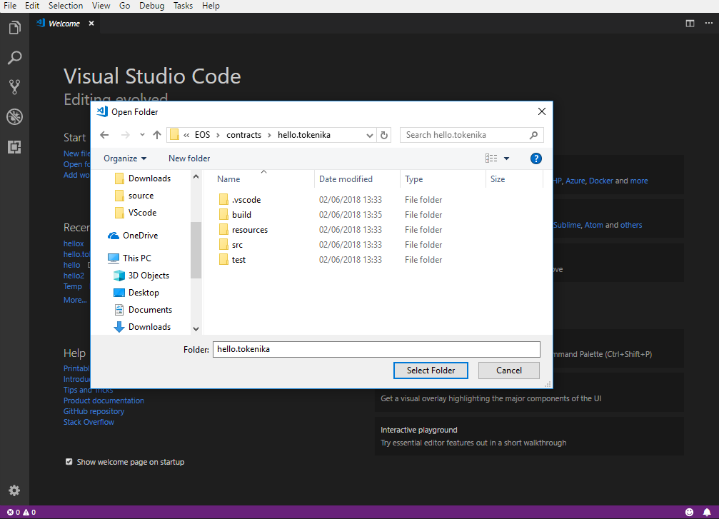

Working with EOS Contracts using EOSFactory in Visual Studio Code¶
The purpose of this tutorial is to demonstrate how EOSFactory can be combined with Visual Studio Code in order to streamline the process of working with EOS smart-contracts.
Prerequisites¶
This tutorial assumes that you have successfully installed EOSFactory. If it’s not the case, please refer to Installing EOSFactory.
We assume that you are familiar with the material covered in Interacting with EOS Contracts in EOSFactory.
We also assume you have Visual Studio Code installed. If you are on Windows and run VSC for the first time, in order to get access to Windows Subsystem for Linux bash terminal inside VSC, navigate to
Preferences -> Settingsand overwrite the default configuration for theterminal.integrated.shell.windowsoption:"terminal.integrated.shell.windows": "C:\\Windows\\sysnative\\bash.exe"
Finally, we assume that you are familiar with the official EOS Hello World tutorial, as it presents the standard way to compile and deploy smart-contracts in EOS. What we present here is an alternative.
Create a new smart-contract from a template¶
First, navigate to the teos/build/teos folder inside EOSFactory installation:
cd eosfactory/teos/build/teos
And then run the teos executable:
./teos bootstrap contract contract.name eosio.token
NOTE: The first parameter (in our case contract.name) is the name of your contract. It can be any name you want, provided there are no spaces in it. Letters, numbers, underscores _, dots . and dashes - are allowed.
NOTE: The second parameter (in our case eosio.token) is optional and it denotes the template from which the new contract will be created. As of now there are only two templates (called skeleton and eosio.token) but there’ll be more in the future.
Alternatively, you can use the $teos_cli system variable created during EOSFactory installation. It allows you to run the teos executable from any location, for example:
$teos_cli bootstrap contract contract.name skeleton
Open the smart-contract in Visual Studio Code¶
Start Visual Studio Code (VSC) and inside VSC open the folder where your newly created contract has been placed. The folder name always matches the name of contract itself and can be found within the location you assigned as your workspace during EOSFactory installation.

NOTE: If you are not sure where your newly created contract is, its location is specified during the contract creation process, for example:
# template contract: /mnt/d/Workspaces/EOS/contracts/contract.name
Open Visual Studio Code automatically¶
If you are on Windows, you can use the --vsc argument to have the contract’s folder opened for you automatically in VSC right after the creation process is finished:
$teos_cli bootstrap contract contract.name skeleton --vsc
NOTE: By default the above feature works on a Windows machine only. To make it work on other operating systems (Linux and MacOS) you need to place your VSC executable is on a system path, so that the teos executable is able to launch it.
Visual Studio Code project file structure¶
Once you open a smart-contract’s folder in VSC, the file structure should look like this:

As you can see, what you get is a standardized structure with a clear separation between the source code, build output files and unit tests.
Use CMake in Visual Studio Code¶
With EOSFactory you can use CMake routines to compile, build and unit test a contract.
At this stage we assume that you are running VSC and inside it you have opened your smart-contract’s folder, as described in the previous section.
First open a bash terminal inside VSC (navigate to View -> Integrated Terminal), and switch to the build folder:
cd build
Initial compilation with CLANG¶
The advantage of using the CLANG compiler (as opposed to the WASM compiler) is that it runs faster and does not involve the linking process. Thus most of the errors in a smart-contract’s code can be spotted automatically by CLANG.
Using a bash terminal in VSC, run the following command to compile your contract with the CLANG compiler:
cmake ..
The output should look like this:
-- The C compiler identification is GNU 7.3.0
-- The CXX compiler identification is GNU 7.3.0
-- Check for working C compiler: /usr/bin/cc
-- Check for working C compiler: /usr/bin/cc -- works
-- Detecting C compiler ABI info
-- Detecting C compiler ABI info - done
-- Detecting C compile features
-- Detecting C compile features - done
-- Check for working CXX compiler: /usr/bin/c++
-- Check for working CXX compiler: /usr/bin/c++ -- works
-- Detecting CXX compiler ABI info
-- Detecting CXX compiler ABI info - done
-- Detecting CXX compile features
-- Detecting CXX compile features - done
-- Configuring done
-- Generating done
-- Build files have been written to: /mnt/d/Workspaces/EOS/contracts/contract.name/build
Building with WASM compiler¶
Run the following command to build your contract with the EOSIO WASM compiler:
make
The output should look like this:
# ABI: /mnt/d/Workspaces/EOS/contracts/hellox/src/../build/contract.name.abi
Built target abi
# WAST: /mnt/d/Workspaces/EOS/contracts/hellox/src/../build/contract.name.wast
Built target wast
NOTE: If the ABI file already exists in the src folder (you should keep it there, if you prefer to create it manually instead of relying on the EOSIO toolset) CMake will skip the ABI file generation step and proceed with WAST file generation.
Running unit tests¶
And finally, after your contract has been successfully built, invoke unit tests with this command:
ctest
If you want to make your unit tests more verbose, use the -V parameter:
ctest -V
And if you want to be more specific about which unit tests should be run, you can use the -R parameter which allows you to supply a regular expression indicating specific criteria regarding the names of the tests to be run, for example:
ctest -R ^test$
The outcome of the unit test (in the non-verbose mode) should look like this:
Test project /mnt/d/Workspaces/EOS/contracts/hello.tokenika/build
Start 1: unittest
1/2 Test #1: unittest ......................... Passed 6.58 sec
Start 2: test
2/2 Test #2: test ............................. Passed 5.12 sec
100% tests passed, 0 tests failed out of 2
Total Test time (real) = 11.71 sec
NOTE: As you’ve probably noticed, we have two types of unit tests: the standard ones (named unittest1, unittest2, etc) and ad-hoc ones (named test1, test2, etc). The reason for this duality is this: we find it useful to have standard unit tests to prove that things work as expected, and ad-hoc tests to investigate bugs and generally monitor the inner workings of a smart-contract. EOSFactory supports both, so you can choose whatever suits your needs.
Use automated tasks in Visual Studio Code¶
Running VSC automated tasks is an alternative to using CMake routines described in the previous section.
To have your code compiled by the CLANG compiler navigate to Tasks -> compile:

To have your code built by the WASM compiler navigate to Tasks -> build:

To run unit tests navigate to Tasks -> unittest:

Use IntelliSense in Visual Studio Code¶
By opening an individual contract folder in VSC you’ll also be able to make use of VSC IntelliSense feature. However for that to work you’ll need to install the C/C++ IntelliSense extension in VSC.

Debug with smart loggers¶
As EOSFactory grows, it will include further libraries that could facilitate the process of smart-contract development.
Here we present one of such features in action: the logging tool. It’s quite important, as the only way to debug a smart contract is actually by using loggers.
You’ll notice the logger.hpp header file in the src directory. And if you have applied the skeleton template when creating your VSC project, you’ll notice the following line in the contract.name.cpp file:
logger_info("user: ", name{user});
The effect of the above code entry is the following output in test results:
INFO user: carol @ 8:53:50 contract.name.cpp[16](hi)
What that means is that the logger offers you not only the value of a variable, but also the exact line number and the file name where this logger event occured.
NOTE: If you run your tests using CMake, you’ll need to apply the verbose mode to be able to see this output.